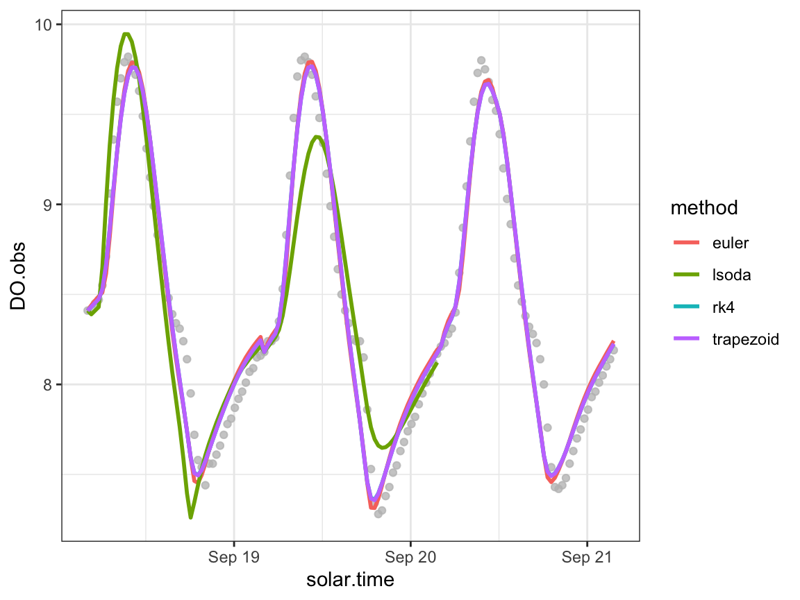
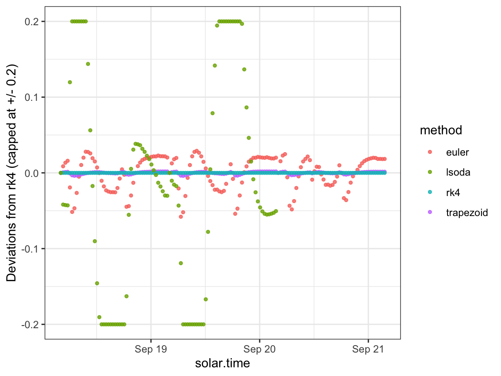

Overview
This vignette demonstrates how you can choose and compare the ODE solution method, which is the numerical algorithm used to translate from a given set of daily metabolism parameters into a time series of dissolved oxygen predictions.
Setup
Load streamMetabolizer and some helper packages.
Get some data to work with: here we’re requesting three days of data at 30-minute resolution. Thanks to Bob Hall for the test data.
dat <- data_metab('3','30')Numerical integration
Inspired by Song et al. 2016, we can now do several types of
numerical integration and compare them. lsoda often fails
to converge, but rk4 and trapezoid perform
well and very similarly to one another (and trapezoid is
faster). trapezoid is available for both MLE and Bayesian
models.
Here we fit MLE models using four different ODE methods.
## Warning in metab_fun(specs = specs, data = data, data_daily = data_daily, : we've seen bad results
## with ODE methods 'lsoda', 'lsodes', and 'lsodar'. Use at your own risk## DINTDY- T (=R1) illegal
## In above message, R1 = 28
##
## T not in interval TCUR - HU (= R1) to TCUR (=R2)
## In above message, R1 = 27.1702, R2 = 27.1702
##
## DINTDY- T (=R1) illegal
## In above message, R1 = 29
##
## T not in interval TCUR - HU (= R1) to TCUR (=R2)
## In above message, R1 = 27.1702, R2 = 27.1702
##
## DLSODA- Trouble in DINTDY. ITASK = I1, TOUT = R1
## In above message, I1 = 1
##
## In above message, R1 = 29
## Now we create a data.frame to compare the above options.
DO.standard <- rep(predict_DO(mm_rk4)$'DO.mod', times=4)
ode_preds <- bind_rows(
mutate(predict_DO(mm_euler), method='euler'),
mutate(predict_DO(mm_trapezoid), method='trapezoid'),
mutate(predict_DO(mm_rk4), method='rk4'),
mutate(predict_DO(mm_lsoda), method='lsoda')) %>%
mutate(DO.mod.diffeuler = DO.mod - DO.standard)We can plot the predictions from each method.
ggplot(ode_preds, aes(x=solar.time)) +
geom_point(aes(y=DO.obs), color='grey', alpha=0.3) +
geom_line(aes(y=DO.mod, color=method), size=1) +
theme_bw()## Warning: Using `size` aesthetic for lines was deprecated in ggplot2 3.4.0.
## ℹ Please use `linewidth` instead.
## This warning is displayed once every 8 hours.
## Call `lifecycle::last_lifecycle_warnings()` to see where this warning was generated.## Warning: Removed 48 rows containing missing values (`geom_line()`).
To inspect the details, we can also plot the predictions as deviations from the rk4 method.
ggplot(ode_preds, aes(x=solar.time)) +
geom_point(aes(y=pmax(-0.2, pmin(0.2, DO.mod.diffeuler)), color=method), size=1, alpha=0.8) +
scale_y_continuous(limits=c(-0.2,0.2)) +
ylab("Deviations from rk4 (capped at +/- 0.2)") +
theme_bw()## Warning: Removed 48 rows containing missing values (`geom_point()`).